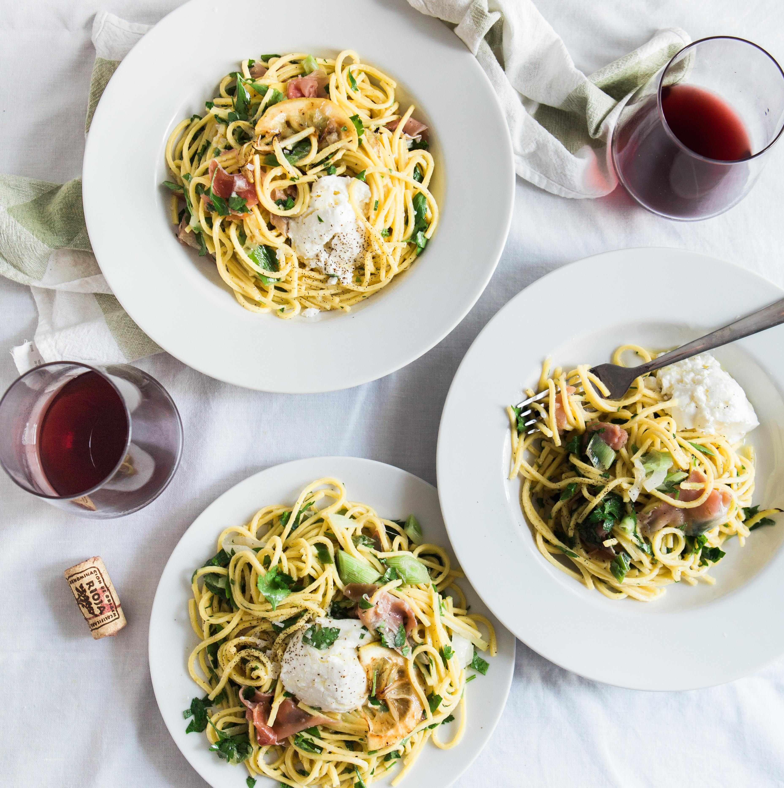

La recette du mois : Les spaghetti champignons, speck et burrata

- Les ingréditents pour 4 pers
- 400g de spaghetti fraiches
- 200g de champignons de Paris
- une gousse d'ail
- 200g de speck
- 200g de burrata
- 1 c. à café de paprika fumé
- 2 c.à soupe d'huile d'olive
- sel et poivre
- Instructions
- Portez à ébullition une grande casserole d'eau salée, et faites cuire vos spaghetti selon les instructions de l'emballage.
- Lavez et coupez les champignons.
- Faites chauffer une poêle avec l'huile d'olive et l'ail émincé.
- Ajoutez-y ensuite les champignons, le speack et le paprika fumé et faites revenir le tout pendant une petite dizaine de minutes, ou jusqu'à ce que les champignons soient bien grillés.
- Une fois les pâtes cuites, égouttez-les, et ajoutez-les à la poele avec les champignons et 2 cuillères à soupe d'eau de cuisson. Mélangez bien, salez, poivrez et coupez le feu.
- Ajoutez la burrata.
- Servez et Dégustez!